Robótica e automação
Manutenção, preparação a apresentação de aulas práticas no laboratório de robótica, para o curso de Engenharia de Controle e Automação no IFSP (2015).
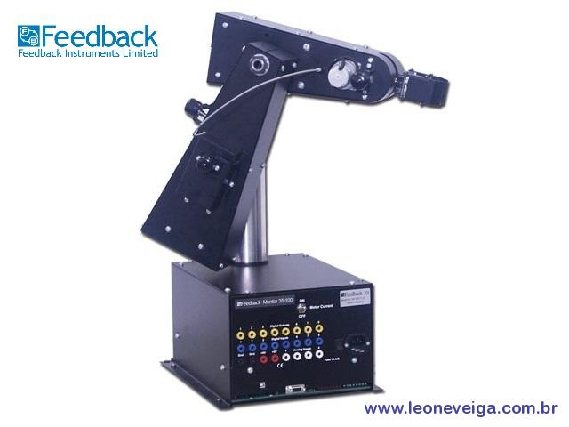
Braço Robótico
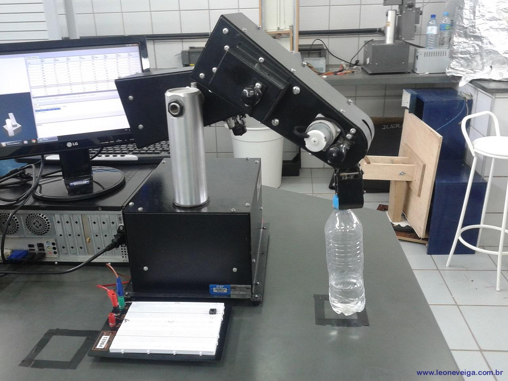
Demonstração
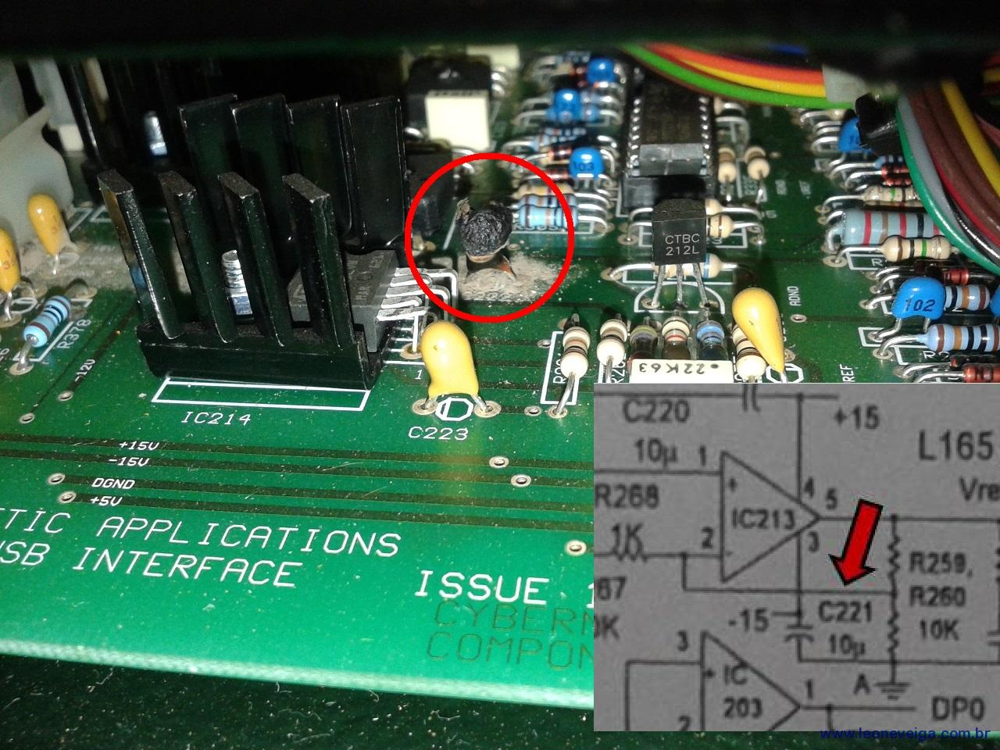
Manutenção
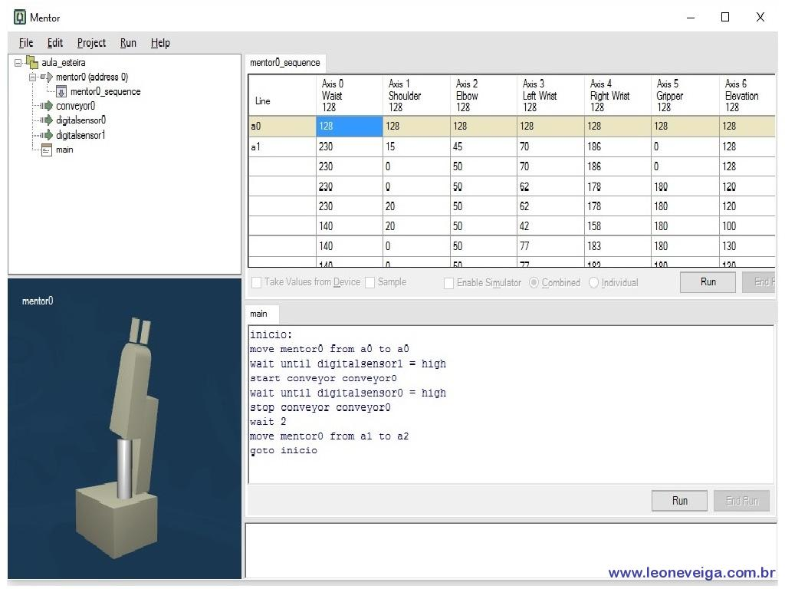
Programação
Projeto Baja SAE Brasil
Membro de equipe vinculada ao Projeto Baja SAE Brasil, pela equipe UFVbaja da Universidade Federal de Viçosa (2008 a 2010).
Atuação na sub-equipe de Eletrônica, Instrumentação e Telemetria do veículo offroad.
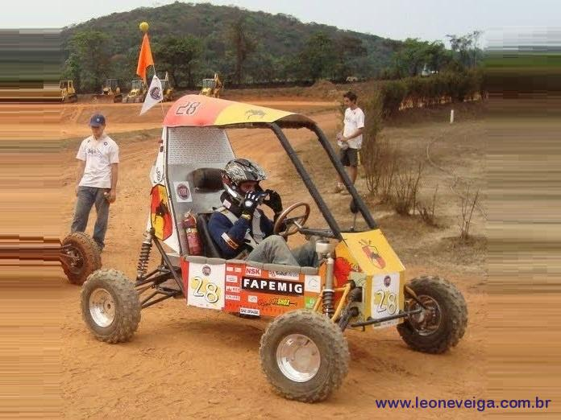
Veículo projetado
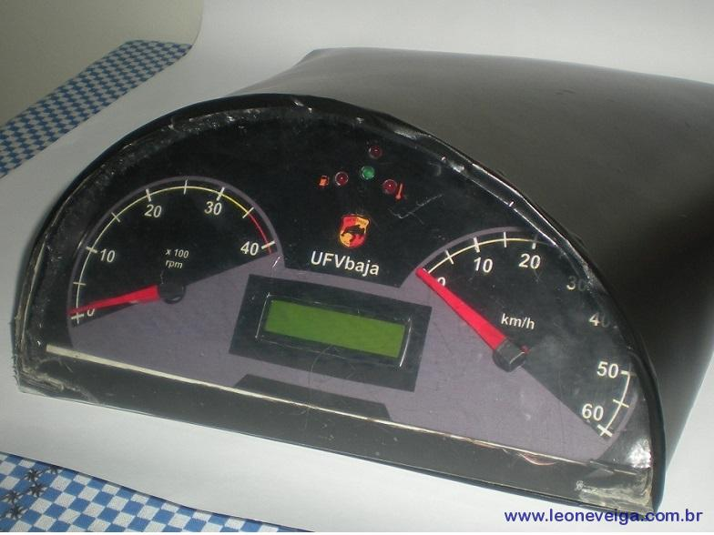
Painel eletrônico
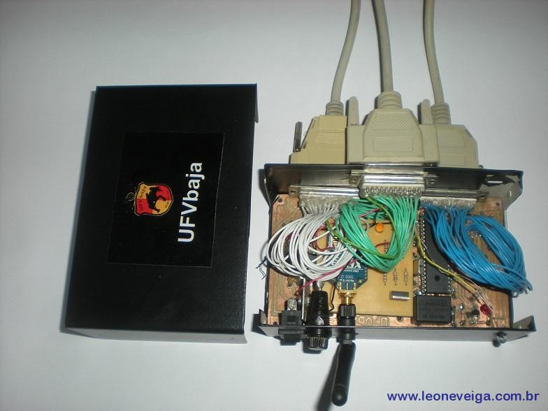
Circuito embarcado
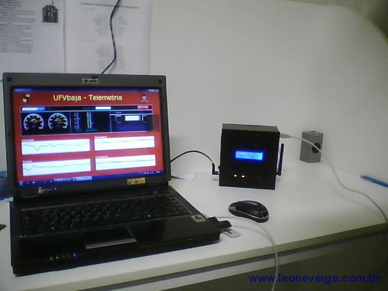
Telemetria e supervisório
Fontes de Tensão
Projeto e montagem de Fontes de Tensão (6 unidades), executado dutrante estágio no Laboratório de Eletrônica do Departamento de Física da Universidade Federal de Viçosa (2009)
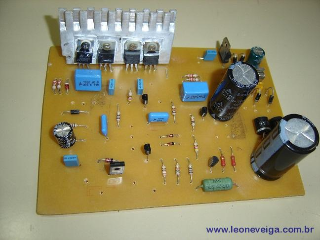
Placa do circuito
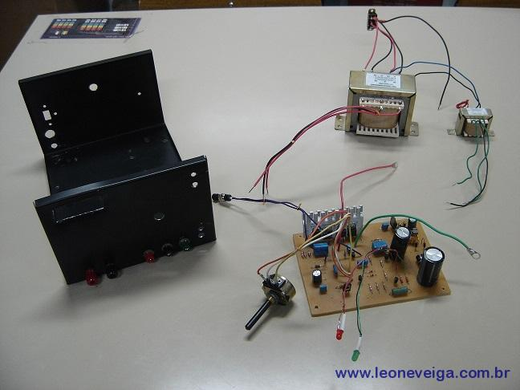
Partes da fonte
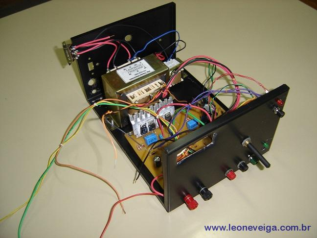
Montagem da fonte
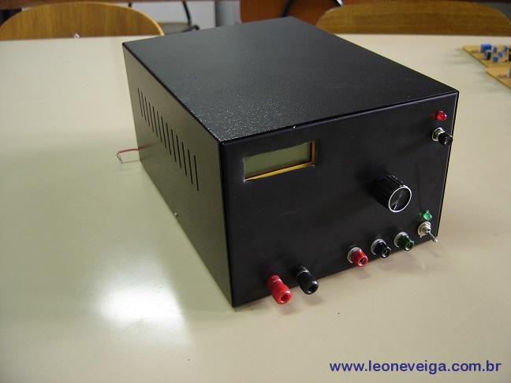
Fonte de Tensão
Metamateriais
Projeto, fabricação e caracterização experimental de metamateriais para a faixa de GHz (2011 a 2013)
Projeto de mestrado executado na USP de São Carlos, no Departamanto de Eng. Elétrica.

Placa de Metamaterial

Arranjo periódico

Simulações computacionais

Setup experimental
Catador de resíduos para rios poluídos
Projeto de extensão - IFSP - Instituto Federal de São Paulo - Campus São João da Boa Vista (2015).
Participação como membro/professor da equipe do projeto e montagem de um protótipo de um catador de resíduos sólidos presentes em águas correntes de rios poluídos. O mecanismo utiliza a própria correnteza da água como força motora para gerar o movimento de uma esteira que transporta os resíduos para um compartimento flutuante.

Projeto em 3D

Protótipo

Protótipo

Notícia nas mídias